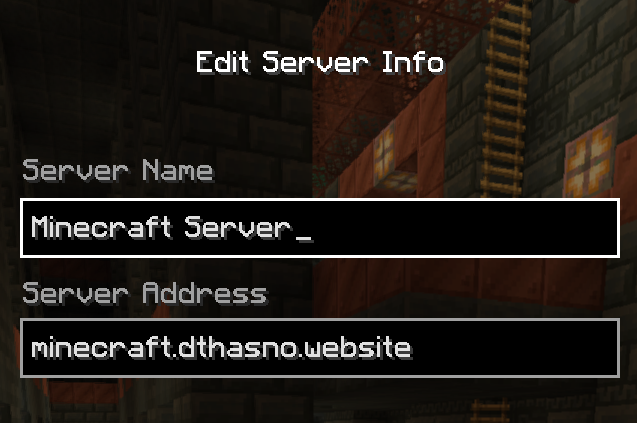
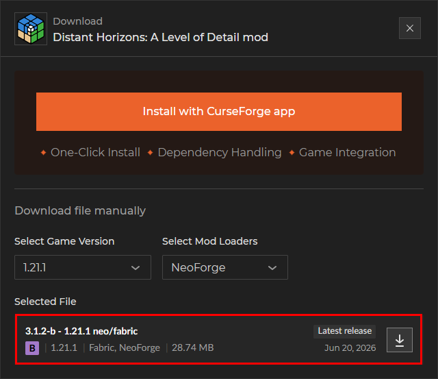
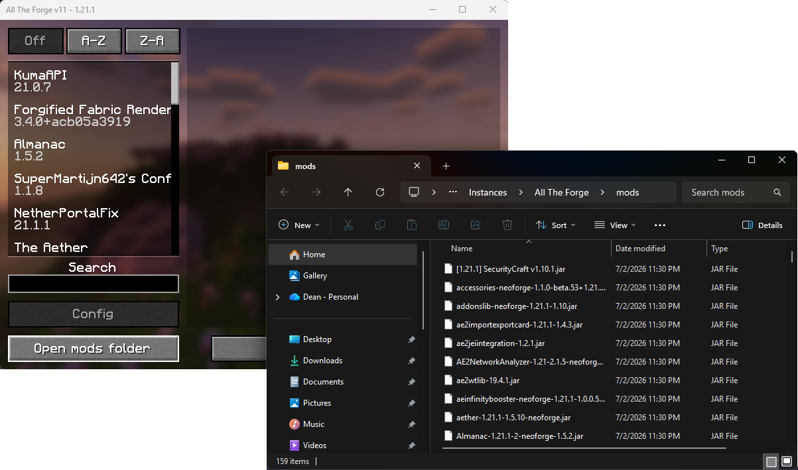

Welcome! This is a simple website to tell you what mods to install and how to install them in order to play on my minecraft server.
Install Curseforge
First you'll need to install Curseforge, a third-party modpack manager. See the video on the right for instructions.
You'll need to log into the app with a Google, Twitch, Discord, or Github account. It shouldn't matter what you use.
Install the Modpack

Now that you have Curseforge, you'll want to install the actual modpack "All the Forge"
In curseforge, select Minecraft and navigate to the "Browse" tab and search "All the Forge". The one you want is simply "All the Forge" by TeamAMPZ.
Click install, and then if there is a popup asking whether you want to create a new profile or add to an existing, click "Create new profile". A new profile for the modpack should appear in the "My Modpacks" tab
After the install, navigate to "My Modpacks" and double-check the version. The modpack version should be "All The Forge-v11.2.1hf" running Minecraft version 1.21.1.
Launch Game and Join Server
You should now have everything you need to play!
Hit the "Play" button on your new profile in Curseforge whenever you want to run the game. The Minecraft launcher will run with the mods already loaded as a new profile. Then simply log into your minecraft account and run the game without changing the profile.
Use the "minecraft.dthasno.website" as the server address.

Join the Discord
We have a community discord server set up for voice chat. Use this link to join. Please be respectful to other players in chat and please let me know if the link is expired.
(Optional) Install Distant Horizons

Distant Horizons is an optional client-side mod that boosts your render distance. The mod keeps track of terrain you have explored and keeps it visible even if it's beyond the server's render distance. You won't see chunk updates unless you're within the server's render distance, but it's a nice visual touch.
To install, first download the .jar file from the Curseforge website. Be sure to select Minecraft 1.21.1 for NeoForge.
Next, launch the game, click the "Mods" section in the main menu, then the "Open Mods Folder" button. Copy your downloaded Distant Horizons jar file into that folder.
Close the mods folder, then close and restart the game. Next time you look at your mods section you should be able to search for Distant Horizons. If you can, the mod is installed and ready to go.
